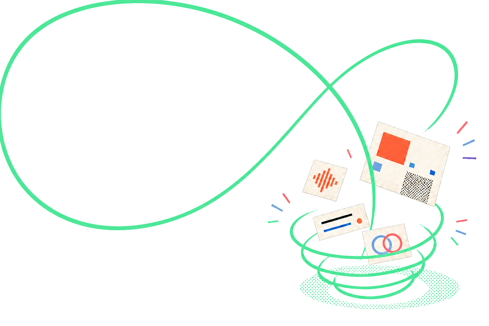

Capture, then clarify
Take a region, window, display, or multi-display shot. It opens ready to annotate at full resolution.
Explore annotationScreenshots, recordings, audio notes, selected text, and links—one shortcut away, saved on your PC.
First install: Windows may initially show only Don’t run. Verify the GitHub download, then unblock the file in Properties or continue through More info. See both methods.
Windows 10 version 2004 or newer · x64 · Per-user install · No account

Catch now. Find it later.
 CursorPocketReadyCtrl Shift Space
CursorPocketReadyCtrl Shift SpaceCursorPocket’s mnemonic keys stay the same everywhere. The interface teaches them once, then gets out of your way.
Take a region, window, display, or multi-display shot. It opens ready to annotate at full resolution.
Explore annotationChoose the source, named microphone, camera, frame rate, and countdown before anything starts.
Explore video recordingReview screenshots, video, audio, text, and links together—with previews and playback built in.
Explore the LibraryExplain a screenshot, record a walkthrough, and return to anything you saved without handing your work to another service.
Every screenshot is copied immediately and opens at full resolution. Add a quick mark or turn it into a finished visual without leaving CursorPocket.
Crop, cut, and backdrop create a new capture, so the original stays untouched.
Preflight names the source and devices before the countdown. Record a clean screen walkthrough with narration and an optional camera self-view, then save a standard MP4 locally.
Screen, microphone, and camera access begin only after you choose Start recording.
Open the Library with O to browse every local capture newest first. It is a normal movable, resizable Windows window—not a cloud dashboard.
Arrow keys navigate, Enter opens, and Space plays or pauses.
Quiet capture, kept on this computer.The pocket mark means saved locally and ready when you come back.